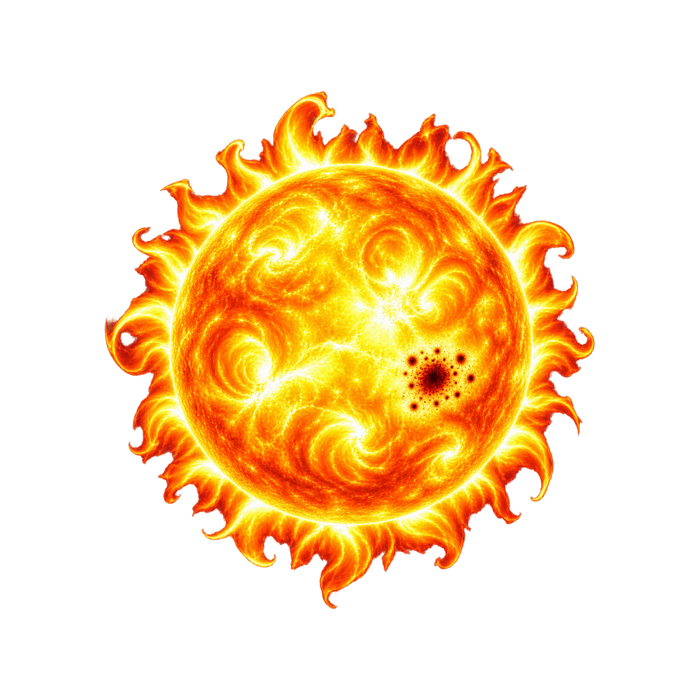

A — Corona Crown
Full disk, thick uneven short-flame crown, one bold sunspot cluster, broad convection swirls.

Native 1:1Nearest 8×
- Clearest literal Sun silhouette.
- Radial crown remains visible at 32px.
- Sunspot cluster compresses to one stable dark cue.